Комп'ютер з Windows 10 або новішою та інтернет. Більше нічого встановлювати окремо не треба — програма зробить це сама. Встановлення займає 2-5 хвилин.
Натисніть кнопку «Скачати безкоштовно» на головній сторінці нашого сайту — завантажиться архів «Встановлення.zip».
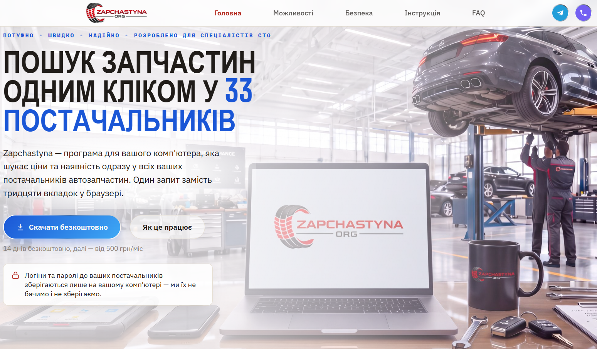
Натисніть на архів «Встановлення» правою кнопкою миші та оберіть «Видобути все...» (якщо Windows російською — «Извлечь всё...»). У вікні, що відкриється, натисніть «Видобути».
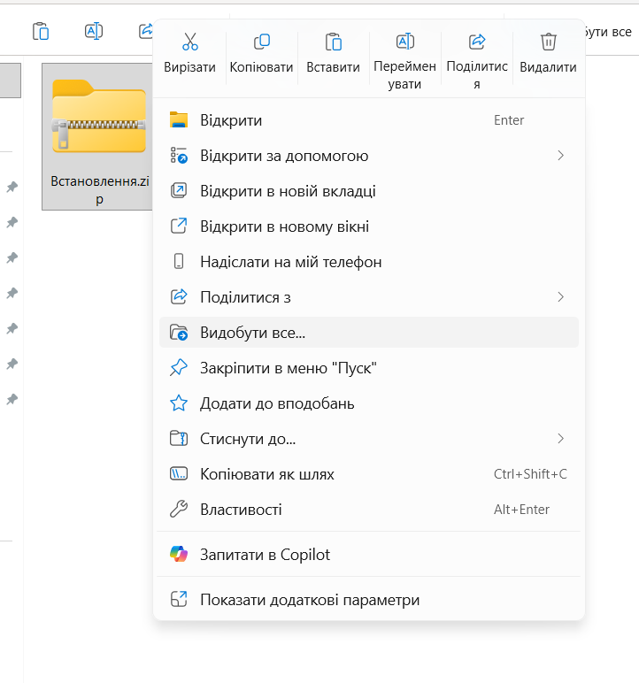
У розпакованій папці двічі клацніть на файл «Встановити». Відкриється чорне вікно — це нормально, так і має бути.
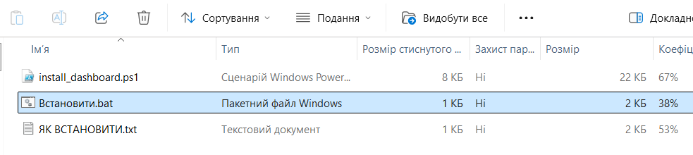
Далі робити нічого не треба. Програма сама встановить усе необхідне, завантажиться та налаштується, запуститься і відкриється у браузері. Не закривайте чорне вікно — воно закриється саме.
Якщо на вашому комп'ютері ще не встановлено Python, на цьому кроці вікно може «мовчати» 2-3 хвилини — це нормально, просто зачекайте.
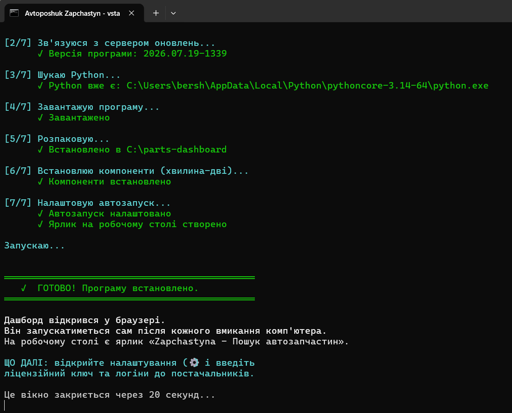
Відкрийте налаштування — значок шестерні у правому верхньому куті — та введіть ліцензійний ключ (щоб отримати ключ доступу, напишіть нам у Telegram чи Viber), оберіть ваше місто і введіть логіни та паролі до ваших постачальників.
Без ліцензійного ключа програма не працюватиме. Без логінів постачальників пошук нічого не знайде — програма шукає саме у ваших особистих кабінетах.
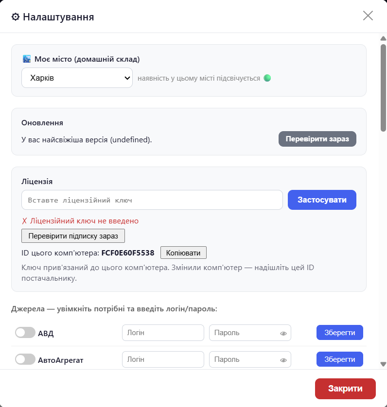
Просто натисніть ярлик «Zapchastyna - Пошук автозапчастин» на робочому столі — відкриється сторінка пошуку. Якщо ви щойно увімкнули комп'ютер, дайте йому хвилину-дві: програма запускається у фоні не миттєво. Якщо ви закріпите вкладку у Google Chrome (клік правою кнопкою миші/Закріпити), то при запуску Chrome сторінка вже буде завантажена і готова до роботи.
Коли вийде нова версія, у дашборді з'явиться повідомлення про оновлення. Натисніть кнопку — програма оновиться сама. Ваші логіни, паролі та ліцензія при цьому зберігаються.
Не закривайте вікно з помилкою — сфотографуйте його або зробіть скріншот і надішліть нам. Комп'ютер при цьому не змінюється: якщо встановлення не завершилося, нічого зайвого на ньому не залишається. Найчастіша причина помилок — обрив інтернету під час встановлення. У такому разі просто запустіть «Встановити» ще раз.
Два невеликих розширення для Chrome роблять роботу зручнішою. Встановлювати їх не обов'язково — дашборд працює і без них.
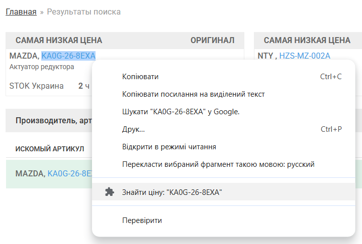
Встановлення однакове для обох:
chrome://extensions.C:\parts-dashboard\chrome-extension.C:\parts-dashboard\chrome-extension-search.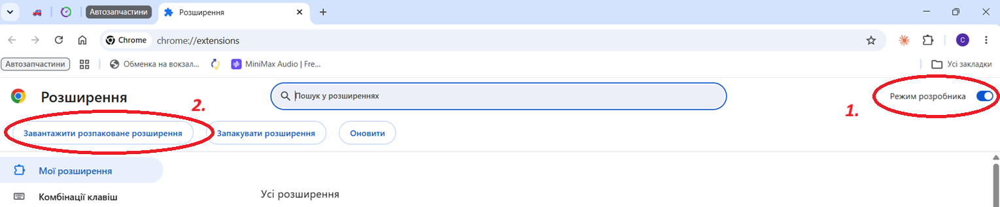
Після цього обидва розширення з'являться у списку та працюватимуть автоматично.
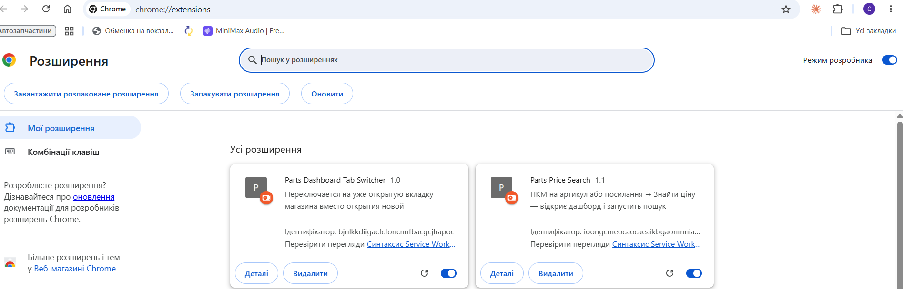
АСГ — щоб увімкнути цього постачальника, спочатку потрібно відкрити собі доступ до API прайсів: зверніться до вашого менеджера АСГ (контакти — в особистому кабінеті на сайті, розділ «Налаштування») і попросіть відкрити доступ до API прайсів.
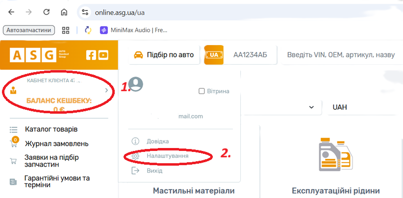
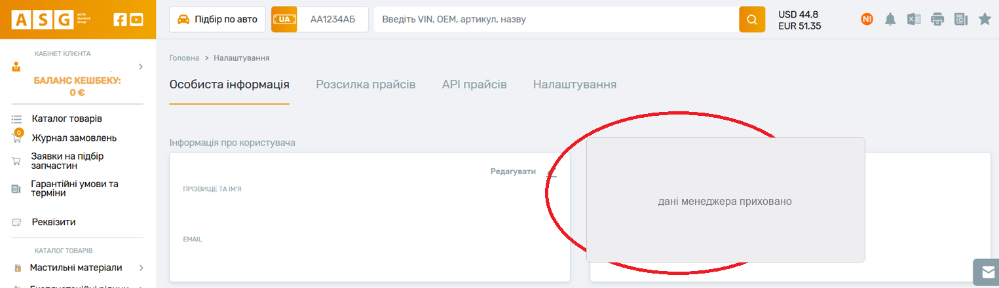
Коли доступ відкриють, у кабінеті з'явиться сторінка вибору складів — оберіть потрібні склади та збережіть. Після цього можна вмикати АСГ у налаштуваннях дашборду.
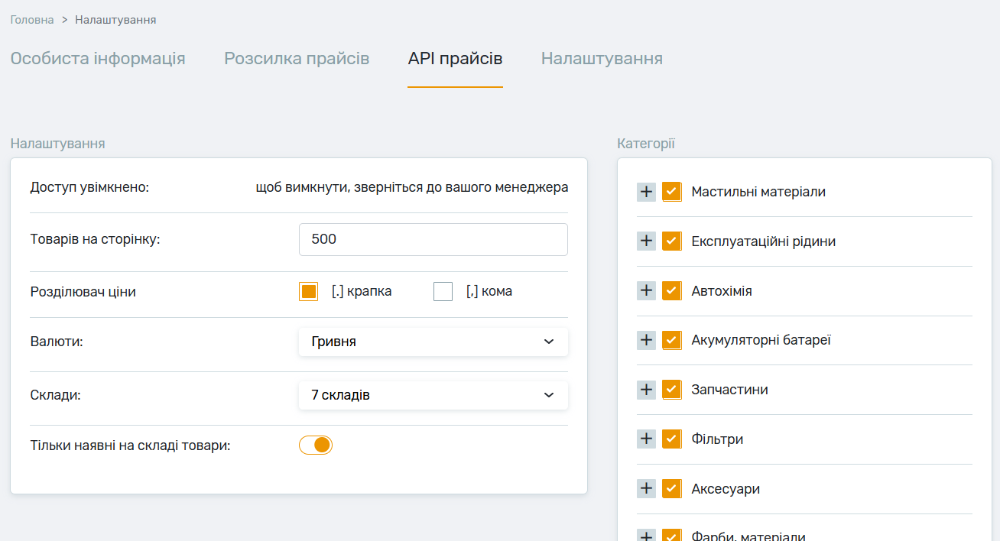
ТехноМір — замість звичайного логіна і пароля тут потрібен API-токен. Згенеруйте його в особистому кабінеті на сайті постачальника і вставте в поле «Логін» у налаштуваннях дашборду.
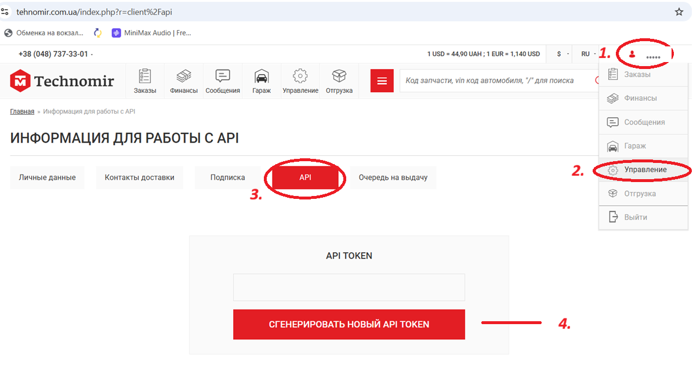
АвтоПро — якщо в результатах пошуку є ціна, а на сайті постачальника ви її одразу не бачите, це не помилка: прогорніть сторінку вниз і тричі натисніть «Показати ще». Дашборд збирає ціни одразу з чотирьох сторінок видачі АвтоПро.
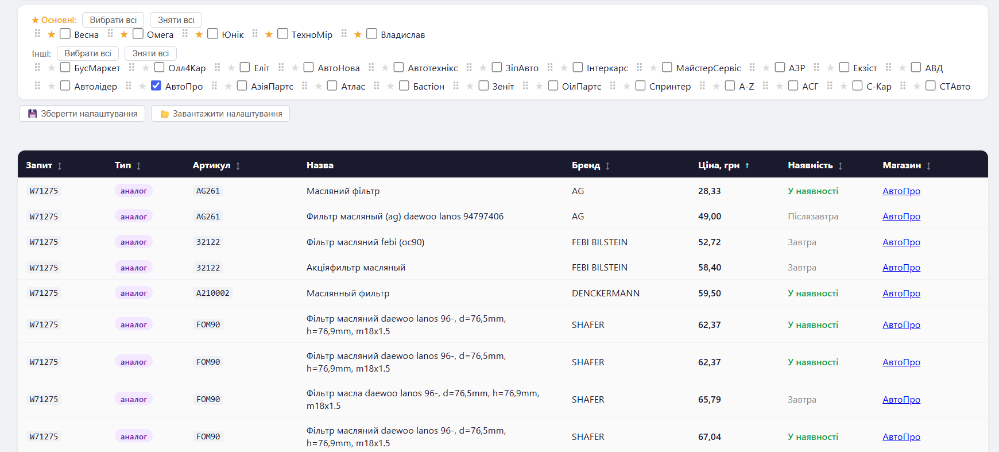
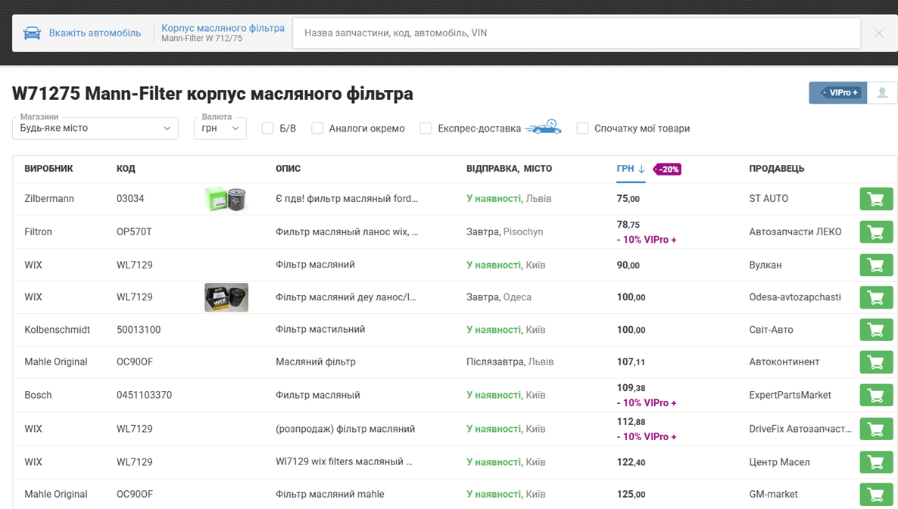
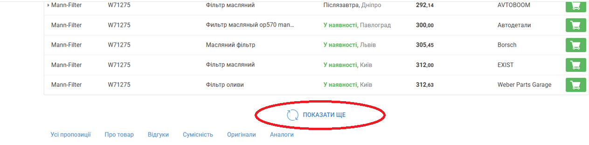